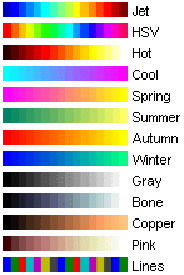

Matlab Tutorial : Digital Image Processing 3 - Grayscale Image I
In this chapter, we'll investigate more on grayscale because it is usually the preferred format for image processing. Even in cases requiring color, an RGB color image can be decomposed and handled as three separate grayscale images. Indexed images must be converted to grayscale or RGB for most operations.
To understand grayscale better, we need to know other types of images. Here are 5 image representations used in Matlab:
- Grayscale : A grayscale image $m$ pixels tall and $n$ pixels wide is represented as a matrix of double datatype of size $m \times n$. Element values (such as $img(m,n)$) denote the pixel grayscale intensities in $[0,1]$ with 0=black and 1=white.
- Truecolor RGB : A truecolor RGB image is represented as a three-dimensional $m \times n\times 3$ double matrix. Each pixel has red, green, blue components along the third dimension with values in $[0,1]$, for example, the color components of pixel $(m,n)$ are $img(m,n,1)$ = red, $img(m,n,2)$ = green, $img(m,n,3)$ = blue.
- Indexed : Indexed images are represented with an index matrix of size $m \times n$ and a colormap matrix of size $k \times 3$. The colormap holds all colors used in the image and the index matrix represents the pixels by referring to colors in the colormap. For example, if the 19th color is magenta $cmap(19,:) = [1,0,1]$, then $img(m,n) = 19$ is a magenta-colored pixel.
- Binary : A binary image is represented by an $m \times n$ logical matrix where pixel values are 1 (true) or 0 (false).
- uint8 : This type uses less memory and some operations compute faster than with double types.
Note that the value range depends on the data type class: for example, the $[0,1]$ is for double data type. If it's uint8, the range that Matlab interprets is [0,255], and so on.
I got this off the Web and loaded the image into Matlab:
img = imread('Einstein.jpg');
imshow(img);

When I try to check the pixel value (intensity) using size():
>> size(img) ans = 845 915 3
The grayscale image supposed to have $845 \times 915$ without 3 which indicates RGB. So, I check the values:
>> img(400,400,:) ans(:,:,1) = 22 ans(:,:,2) = 24 ans(:,:,3) = 19 >> img(350,500,:) ans(:,:,1) = 113 ans(:,:,2) = 117 ans(:,:,3) = 116
The values for the intensity seem reasonable because all three components have almost identical values. So, I converted it to real-grayscale using rgb2gray() which converts the truecolor image RGB to the grayscale intensity image. The rgb2gray() converts RGB images to grayscale by eliminating the hue and saturation information while retaining the luminance.
img = imread('Einstein.jpg');
gray = rgb2gray(img);
imshow(gray);
and then size() on it:
>> size(gray) ans = 845 915
Now, I have real grayscale image!
>> gray(400,400,:) ans = 23 >> gray(350,500,:) ans = 116
Now the image looks all right.
As mentioned before, the rgb2gray() converts the truecolor image RGB to the grayscale intensity image. The rgb2gray() converts RGB images to grayscale by eliminating the hue and saturation information while retaining the luminance.
But it could be done manually using the the standard NTSC conversion formula as suggested by MathWorks Support Team (How do I convert my RGB image to grayscale without using the Image Processing Toolbox?):
intensity = 0.2989*red + 0.5870*green + 0.1140*blue
So, in my case, I do this:
rgb = imread('Einstein.jpg');
gray_manual = 0.2989 * rgb(:,:,1) + 0.5870 * rgb(:,:,2) + 0.1140 * rgb(:,:,3);
imshow(gray);
We can compare the pixel's intensity with the image converted by rgb2gray():
>> gray_manual(400,400,:) ans = 23 >> gray_manual(350,500,:) ans = 116
Yes, we got the same intensities for those two pixels.
In this section, we're going to create two grayscale images of size $320 \times 240$: one with pixels all black and the other one all white:
h = 240; w = 320; white = uint8(255*ones(h,w)); black = uint8(zeros(h,w)); figure; subplot(121); imshow(white); subplot(122); imshow(black);

Here is the famous cameraman.tif.
The file info looks like this:
>> imfinfo('cameraman.tif')
ans =
Filename: [1x83 char]
FileModDate: '14-Apr-2014 12:53:51'
FileSize: 65126
Format: 'tif'
FormatVersion: []
Width: 256
Height: 256
BitDepth: 8
ColorType: 'grayscale'
FormatSignature: [73 73 42 0]
ByteOrder: 'little-endian'
NewSubFileType: 0
BitsPerSample: 8
Compression: 'PackBits'
PhotometricInterpretation: 'BlackIsZero'
StripOffsets: [8 8262 16426 24578 32492 40499 48599 56637]
SamplesPerPixel: 1
RowsPerStrip: 32
StripByteCounts: [8254 8164 8152 7914 8007 8100 8038 8235]
XResolution: 72
YResolution: 72
ResolutionUnit: 'Inch'
Colormap: []
PlanarConfiguration: 'Chunky'
TileWidth: []
TileLength: []
TileOffsets: []
TileByteCounts: []
Orientation: 1
FillOrder: 1
GrayResponseUnit: 0.0100
MaxSampleValue: 255
MinSampleValue: 0
Thresholding: 1
Offset: 64872
I read it in and converted to indexed image;
I = imread('cameraman.tif');
[X, map] = gray2ind(I, 16);
Let's investigate the map:
>> size(map)
ans =
16 3
Looks like the map has 16 RGB values as we specified in the command. We may want to see the values:
0 0 0
0.0667 0.0667 0.0667
0.1333 0.1333 0.1333
0.2000 0.2000 0.2000
0.2667 0.2667 0.2667
0.3333 0.3333 0.3333
0.4000 0.4000 0.4000
0.4667 0.4667 0.4667
0.5333 0.5333 0.5333
0.6000 0.6000 0.6000
0.6667 0.6667 0.6667
0.7333 0.7333 0.7333
0.8000 0.8000 0.8000
0.8667 0.8667 0.8667
0.9333 0.9333 0.9333
1.0000 1.0000 1.0000
It's 16 rows of RGB and each row corresponds to the index stored in the indexed image X which has the same dimension ($256 \times 256$) as the input.
Let's check the pixel at (128, 128) and see what index the pixel has:
>> X(128,128)
ans =
9
The index of the pixel is 9. That means it has RGB value of the 9th row of the map: 0.6000 0.6000 0.6000.
Now we need mapping of the index info in X to the RGB values in map:
I = imread('cameraman.tif');
[X, map] = gray2ind(I, 16);
imshow(X, map);
Matlab provides built-in colormaps as shown in the picture below:
The jet is the default colormap. So, when we issue colormap command, it will display the jet map:
>> colormap
ans =
0 0 0.5625
0 0 0.6250
0 0 0.6875
0 0 0.7500
0 0 0.8125
0 0 0.8750
0 0 0.9375
0 0 1.0000
0 0.0625 1.0000
0 0.1250 1.0000
0 0.1875 1.0000
0 0.2500 1.0000
0 0.3125 1.0000
0 0.3750 1.0000
0 0.4375 1.0000
0 0.5000 1.0000
0 0.5625 1.0000
0 0.6250 1.0000
0 0.6875 1.0000
0 0.7500 1.0000
0 0.8125 1.0000
0 0.8750 1.0000
0 0.9375 1.0000
0 1.0000 1.0000
0.0625 1.0000 0.9375
0.1250 1.0000 0.8750
0.1875 1.0000 0.8125
0.2500 1.0000 0.7500
0.3125 1.0000 0.6875
0.3750 1.0000 0.6250
0.4375 1.0000 0.5625
0.5000 1.0000 0.5000
0.5625 1.0000 0.4375
0.6250 1.0000 0.3750
0.6875 1.0000 0.3125
0.7500 1.0000 0.2500
0.8125 1.0000 0.1875
0.8750 1.0000 0.1250
0.9375 1.0000 0.0625
1.0000 1.0000 0
1.0000 0.9375 0
1.0000 0.8750 0
1.0000 0.8125 0
1.0000 0.7500 0
1.0000 0.6875 0
1.0000 0.6250 0
1.0000 0.5625 0
1.0000 0.5000 0
1.0000 0.4375 0
1.0000 0.3750 0
1.0000 0.3125 0
1.0000 0.2500 0
1.0000 0.1875 0
1.0000 0.1250 0
1.0000 0.0625 0
1.0000 0 0
0.9375 0 0
0.8750 0 0
0.8125 0 0
0.7500 0 0
0.6875 0 0
0.6250 0 0
0.5625 0 0
0.5000 0 0
The size of the map:
>> size(colormap)
ans =
64 3
We get the same map, if we use jet.
Actually, the colormap just displays the current colormap that's being used. So, if we had used different colormap, it's showing that map but not the default colormap.
We can use other colormaps for our cameraman image.

We can control the colormap size when we do map indexed image to a colormap. For instance:
I = imread('cameraman.tif');
[X, map] = gray2ind(I, 256);
% imshow(X, jet);
imshow(X, jet(256));
title('jet map 256')
Matlab Image and Video Processing Tutorial
- Vectors and Matrices
- m-Files (Scripts)
- For loop
- Indexing and masking
- Vectors and arrays with audio files
- Manipulating Audio I
- Manipulating Audio II
- Introduction to FFT & DFT
- Discrete Fourier Transform (DFT)
- Digital Image Processing 1 - 7 basic functions
- Digital Image Processing 2 - RGB image & indexed image
- Digital Image Processing 3 - Grayscale image I
- Digital Image Processing 4 - Grayscale image II (image data type and bit-plane)
- Digital Image Processing 5 - Histogram equalization
- Digital Image Processing 6 - Image Filter (Low pass filters)
- Video Processing 1 - Object detection (tagging cars) by thresholding color
- Video Processing 2 - Face Detection and CAMShift Tracking
Ph.D. / Golden Gate Ave, San Francisco / Seoul National Univ / Carnegie Mellon / UC Berkeley / DevOps / Deep Learning / Visualization